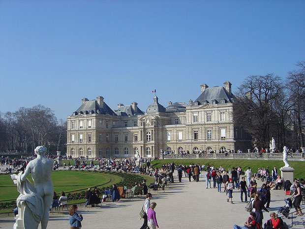

Paris is known for its many elegant parks, but the city boasts a large number of very diverse parks. While some date back to the 17th century, many modern parks have been created in the last couple of decades. Even though Paris has a dense urban structure, the city boasts more than 400 parks.
The Paris squares or places that we want to peak at are those that are more secluded - somewhat like a park in miniature. These will be the locations that can give you respite from a busy day. As you restore your spirit, enjoy the French architecture around the squares, the beautiful plants and the peaceful quiet.

The Jardin du Luxembourg, or the Luxembourg Gardens, is the second largest public park in Paris (224,500 m² (22.5 hectares) located in the 6th arrondissement of Paris, France. The park is the garden of the French Senate, which is itself housed in the Luxembourg Palace.
The garden is largely devoted to a green parterre of gravel and lawn populated with statues and centred on a large octagonal basin of water, with a central jet of water; in it children sail model boats. The garden is famed for its calm atmosphere. Surrounding the bassin on the raised balustraded terraces are a series of statues of former French queens, saints and copies after the Antique. In the southwest corner, there is an orchard of apple and pear trees and the théâtre des marionnettes (puppet theatre). The gardens include a large fenced-in playground for young children and their parents and a vintage carousel. In addition, free musical performances are presented in a gazebo on the grounds and there is a small cafe restaurant nearby, under the trees, with both indoor and outdoor seating from which many people enjoy the music over a glass of wine.
The École nationale supérieure des Mines de Paris and the Odéon theatre stand next to the Luxembourg Garden.
The central axis of the garden is extended, beyond its wrought iron grill and gates opening to rue Auguste Comte, by the central esplanade of the rue de l'Observatoire, officially the Jardin Marco Polo, where sculptures of the four Times of Day alternate with columns and culminate at the southern end with the 1874 "Fountain of the Observatory", also known as the "Fontaine des Quatre-Parties-du-Monde" or the "Carpeaux Fountain", for its sculptures by Jean-Baptiste Carpeaux. It was installed as part of the development of the avenue de l'Observatoire by Gabriel Davioud in 1867.
The bronze fountain represents the work of four sculptors: Louis Vuillemot carved the garlands and festoons around the pedestal, Pierre Legrain carved the armillary with interior globe and zodiac band; the animalier Emmanuel Fremiet designed the eight horses, marine turtles and spouting fish. Most importantly Jean-Baptiste Carpeaux sculpted the four nude women supporting the globe, representing the Four Continents of classical iconography.
Open hours for the Luxembourg Garden depend on the month: opening between 7:30 and 8:15 am; closing at dusk between 4:45 and 9:45 pm.